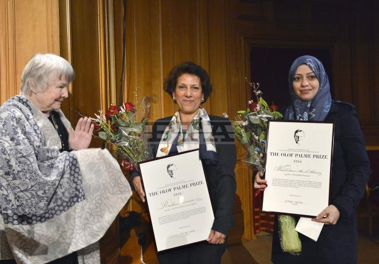
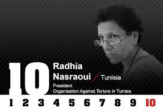
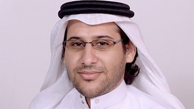

|
|

راضیه النصراوی برنده جایزه اولاف پالمه 2012 : امید در حرکت است
جمعه6 بهمن 1391

تغییر برای برابری، شیرین اردلان
جایزه بنیاد حقوق بشری اولاف پالمه ی سال 2012 به طور مشترک به راضیه النصراوی ازتونس و ولید صمی ابوالخیر ازعربستان سعودی تعلق گرفت.
راضیه النصراوی وکیل حقوق بشر، در سال 2003 موسسه مبارزه علیه شکنجه در تونس را راه اندازی کرد. این موسسه در 2011 به سازمان مبارزه علیه شکنجه در تونس (ALTT ) تغییر نام و توسعه یافت.
او که یکی از برندگان جایزه شرافت انسانی بنیاد رولند برگر در سال 2011 نیز است، بیش از سی سال پیش همکاری اش را با سازمان عفو بین الملل تونس آغاز کرد و بارها به رغم آزار و اذیت، به دفاع از حقوق بشر و اتحادیه کارگران تونس پرداخت. به اعتقاد وی: « اگرصداهایمان را به کار نگیریم، شریک وهمدست ستمگریم.»

راضیه النصراوی:اگرصداهایمان را به کار نگیریم، شریک وهمدست ستمگریم
راضیه النصراوی بارها به خاطر وکالت و فعالیتش مورد آزار قرار گرفته است. با این وجود از پا ننشسته است. او که معتقد است امید در حرکت حاصل می شود، می گوید:" درسال 1978 که وکیل تازه کاری بودم به تاثیر عفو بین الملل برای انجام اقدام به عمل فوری و سریع پی بردم. برای مثال وقتی یکی از موکل هایم ناپدید شد و برای نجات جان او به اقدام سریع نیاز داشتیم و درخواست کمک کردیم، با اقدام سریع و به موقع امنستی، موکلم پیدا شد و برایش دادگاه تشکیل دادند؛ یا وقتی همسرم را سال 1994دستگیر وشکنجه کردند وتلاش گسترده ای برای نجات جان او آغاز شد تاثیر اقدام سریع را دیدم". به گفته وی چنین اقداماتی نشان می دهد که زندانی از یاد نرفته است و همین امر قدرت بخش است.

ولید صمی ابوالخیر یکی دیگر از برندگان جایزه اولاف پالمه است که حقوقدان است و برای دفاع از حقوق بشر و حق شهروندی برای مردان وزنان در عربستان سعودی فعالیت می کند. ولید برای تحقق امنیت قضایی و مدرنیزه شدن جامعه فعال است.
ولید مدیرسایت، Monitor of Human Rights in Saudi Arabia است. این سایت بارها فیلتر و بسته شد اما او از انتشار وقایع مربوط به حقوق بشر باز نایستاد و از طریق فیس بوک خبرها را منتشر می کرد. ولید هنگام خروج از کشور برای شرکت در مراسم اهدای جایزه اولاف پالمه در فرودگاه ممنوع الخروج شد. اما به همسر او اجازه خروج داده شد. جالب این که خروج همسر ولید از کشوراز طریق اس ام اس به شوهر او اعلام شد. طبق قانون جدید گذرنامه درصورت خروج زنان متاهل، خروج آنان از طریق اس ام اس به شوهرهایشان اعلام می شود.
بنیاد اولاف پالمه، برای ایجاد تفاهم بین المللی و امنیت مشترک وبا گرامیداشت تلاش های بشردوستانه اولاف پالمه نخست وزیر ورهبر حزب سوسیال دمکرات سوئد یک سال بعد از ترور وی درسال 1987 تشکیل شد.